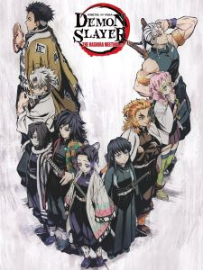

Tanjiro Kamado, the protagonist of "Demon Slayer: Kimetsu no Yaiba," is a determined
and
compassionate
young man. After his family is attacked by demons, he becomes a Demon Slayer to avenge their deaths.
Tanjiro's journey is marked by his kindness, bravery, and the quest to find a cure for his demonized
sister, Nezuko. With a unique black sword and mastery of Breathing Techniques, Tanjiro captivates
audiences with his character growth and the compelling narrative of the series.
Zenitsu Agatsuma, a character in "Demon Slayer: Kimetsu no Yaiba," starts as a fearful
and hesitant
individual. Despite his initial reluctance, he becomes a Demon Slayer and discovers his strength
when
faced with challenges. Zenitsu's comedic yet endearing personality, coupled with his unexpected
moments
of bravery, adds depth to the series.
Nezuko Kamado is a central character in "Demon Slayer: Kimetsu no Yaiba," the younger sister of
Tanjiro Kamado. Following a tragic event where their family is attacked by demons, Nezuko undergoes
a transformation into a demon herself. However, unlike most demons, Nezuko manages to retain her
sense of humanity and her deep love for her brother.
Demons in "Demon Slayer: Kimetsu no Yaiba" are formidable adversaries, possessing a
wide range of abilities and powers. These creatures, once humans themselves, have been transformed
into monstrous beings with insatiable appetites for human flesh. They possess incredible strength,
agility, and regeneration capabilities, making them formidable opponents for Demon Slayers.

The Hashiras, or Pillars, are the elite warriors of the Demon Slayer Corps in "Demon Slayer: Kimetsu
no Yaiba." Each Hashira is a master swordsman or swordswoman specializing in a specific Breath
Style, a form of combat that enhances their abilities against demons. Revered for their strength and
skill, the Hashiras lead the Demon Slayer Corps in battling the most dangerous demon threats.
Despite their prowess, they each carry their own burdens and past traumas, adding depth to their
characters. Throughout the series, the Hashiras play a vital role in guiding the protagonists and
shaping the narrative.